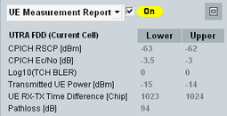
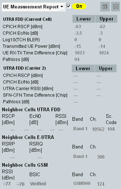

To display the measurement report information, select "UE Measurement Report" in the field below the event log area.
The displayed information is retrieved from "measurement reports" provided by the connected UE. The individual report values are defined in 3GPP TS 25.133.
To enable/disable measurement reports, use the checkbox.
Measurement report information is only available when a connection to the UE has been established. You can enable, disable, and configure the measurement report, see "UE Measurement Report Settings".
This section is not relevant for reduced signaling.

The minimized default presentation shows all measurement report values for the current cell. It is available independent of the active scenario.
Multi-carrier scenarios provide a measurement report per carrier: for the current cell (carrier 1) and for additional carriers. To switch between them, select the carrier (for example "Carrier 2") in the "Cell Setup" section.
To show also neighbor cell measurement results, press the maximize button to the right. It maximizes the area vertically.
The compressed mode is a prerequisite for UE report measurements on neighbor cells, see "Compressed Mode". |
The UE measurement report can be enabled or disabled individually for each neighbor cell, see Figure "Neighbor cell configuration dialog".
To maximize the area also horizontally, press the maximize button to the right.

- "CPICH RSCP":
Integer 1-dB interval for the received signal code power of the CPICH of carrier 1. For CPICH RSCPs below –120 dBm (above –25 dBm), no lower (upper) limit is indicated. - "CPICH Ec/No":
The ratio of the received energy per PN chip for the CPICH of carrier 1 to the total received power spectral density for carrier 1 at the UE antenna. The value is calculated within 0.5-dB interval. For Ec/No below –24 dB (above 0 dB), no lower (upper) limit is indicated. - "Log10(TCH BLER)":
Estimate of the transport channel block error rate. 64 intervals for the logarithm of the TCH BLER are available. The maximum logarithmic TCH BLER is 0, corresponding to a BLER of 1. For values below –4.03 the lower limit is –∞, corresponding to a BLER of 0. - "Transmitted UE Power":
Integer 1-dB interval for the total UE transmitted power on one uplink carrier measured at the antenna connector of the UE. The power must be in the range between –50 dBm and above +34 dBm. - "UE RX-TX Time Difference":
Interval for the difference in time between the UE uplink DPCCH/DPDCH frame transmission and the first detected path (in time) of the downlink DPCH frame from the measured radio link. The time difference is expressed in multiples of a chip period. For time differences below 768 chips (above 1280 chips), no lower (upper) limit is indicated. - "Pathloss":
Downlink pathloss in dB for carrier 1 = reported P-CPICH power - CPICH RSCP. Values below +46 dB (above +158 dB) are reported as +46 dB (+158 dB). The CPICH RSCP is measured by the UE; the reported P-CPICH power is configurable (see "P-CPICH Enhanced > Signalized Level").
To simulate real propagation conditions, the reported P-CPICH power must be much larger than the actual power of the BS signal.
- "CPICH RSCP":
Integer 1-dB interval for the received signal code power of the CPICH of the indicated carrier (for example "Carrier 2"). For CPICH RSCPs below –120 dBm (above –25 dBm), no lower (upper) limit is indicated. - "CPICH Ec/No":
The ratio of the received energy per PN chip for the CPICH of the indicated carrier to the total received power spectral density of the carrier at the UE antenna. The value is calculated within 0.5-dB interval for the indicated carrier. For Ec/No below –24 dB (above 0 dB), no lower (upper) limit is indicated. - "UTRA Carrier RSSI":
Received signal strength indicator (RSSI) defining a 1-dB interval for the wideband power received via the indicated carrier, including thermal noise and noise generated in the receiver. - "SFN-CFN Time Difference":
Time difference between the system frame number (SFN) and the connection frame number (CFN) in chip units. The connection frames are related to the transmission from the UE. The system frames are related to the signal received at the UE via the indicated carrier. - "Pathloss":
Downlink pathloss in dB for the indicated carrier = reported P-CPICH power - CPICH RSCP. Values below +46 dB (above +158 dB) are reported as +46 dB (+158 dB). The CPICH RSCP is measured by the UE; the reported P-CPICH power is configurable.
To simulate real propagation conditions, the reported P-CPICH power must be much larger than the actual power of the BS signal.
- "RSCP":
Integer 1-dB interval for the received signal code power of the CPICH of measured neighbor cell. For CPICH RSCPs below –120 dBm (above –25 dBm), no lower (upper) limit is indicated. - "Ec/No":
The ratio of the received energy per PN chip for the CPICH of measured neighbor cell to the total received power spectral density for neighbor cell at the UE antenna. The value is calculated within 0.5-dB interval. For Ec/No below –24 dB (above 0 dB), no lower (upper) limit is indicated. - RSSI:
Received signal strength indicator (RSSI) defining a 1-dB interval for the wideband power received via neighbor cell, including thermal noise and noise generated in the receiver. - "SFN-CFN Time Difference":
Time difference between the system frame number (SFN) and the connection frame number (CFN) in chip units. The connection frames are related to the transmission from the UE. The system frames are related to the signal received at the UE from the neighbor cell. - "Pathloss":
Downlink pathloss in dB for neighbor cell = reported P-CPICH power - CPICH RSCP. Values below +46 dB (above +158 dB) are reported as +46 dB (+158 dB). The CPICH RSCP is measured by the UE; the reported P-CPICH power is configurable.
To simulate real propagation conditions, the reported P-CPICH power must be much larger than the actual power of the BS signal.
- "RSRP":
The reference signal received power (RSRP) denotes the average power of the resource elements carrying cell-specific reference signals. - "RSRQ":
The reference signal received quality (RSRQ) is calculated as RSRQ = N×RSRP / (E-UTRA carrier RSSI).Where– "N" denotes the number of resource blocks (RB) – "E-UTRA carrier RSSI" denotes the average total received power (including interferers etc.) observed only in OFDM symbols containing reference symbols for antenna port 0 in the bandwidth over N RBs.
- RSSI:
The received signal strength indicator (RSSI) denotes the received wideband power within the GSM channel bandwidth, measured on a GSM BCCH carrier. - BSIC:
The base station identity code (BSIC) verification: the UE measures first RSSI and identifies GSM cell (BSIC non-verified), in the second measurement the UE decodes BSIC (BSIC verified).